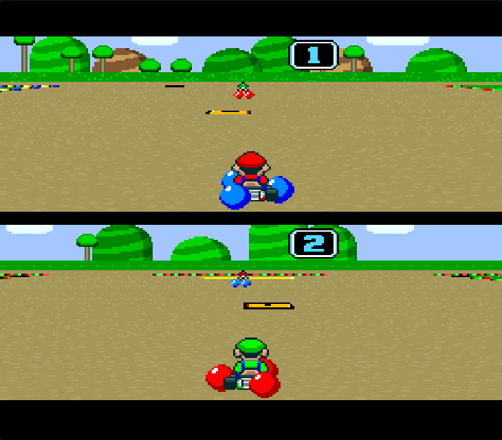

Your original Super Mario Kart.A friend on the other controller, anywhere.

Open a room, then send your friend its two-character code.
The original ROM runs on the host. Your friend joins through the browser.
Share two characters. No accounts or installs for your friend.
Choose 2P GAME in the original menu. Each player controls their own kart.
Original racing, four battle bots, co-op teams, and two bigger battle arenas with jumps.
Original game. Online races. Bigger battle arenas.
Landscape gives you more room to steer.
Quick starts use Mario and Luigi. Open the original menus to choose other drivers and courses.
Custom arenas use the original SNES engine and native jump bars. They replace Battle Course 1 for this session.
Host and share the room code. Pick 2P GAME, choose a mode, then each player selects a driver. Keep the host tab visible.
The custom courses use the original engine and graphics. They are flat layouts with jump bars; raised driving floors and connecting ramps are not implemented yet.
Battle with bots adds four CPU drivers that must collect item blocks. Each carries one banana, green shell, or red shell, then needs another pickup. Used blocks respawn after five seconds with all karts clear; camping on or beside them resets the timer. Co-op battle teams you and your friend against all four. Each driver has three hits; the last team standing wins. Friendly fire is on, so watch your shells!
Co-op Grand Prix adds your points together against three CPU pairs; the original podium still shows individual results. Quick starts use Mario and Luigi.
Grand Courtyard and Jump Junction open up more driving space, with native jump bars and item blocks. Choose an arena before hosting. Tap Your view to show your own half of the original split screen.
D-pad / arrows steer. B / Z accelerates and confirms menus. A / X uses your item. Y / S brakes. L / Q or R / W hops and drifts. Enter is Start. Standard Bluetooth and USB gamepads work too.
Rotate to landscape. Touch buttons support holding gas while steering and using items. Tap the sound button if audio is silent.
On Android, allow Nearby devices / Local network for your browser if same-Wi-Fi connections fail. The host sends the game picture and sound over WebRTC. Restricted networks may need a TURN relay.
Two-character codes identify rooms; they are not passwords. Connection credentials stay in page memory.